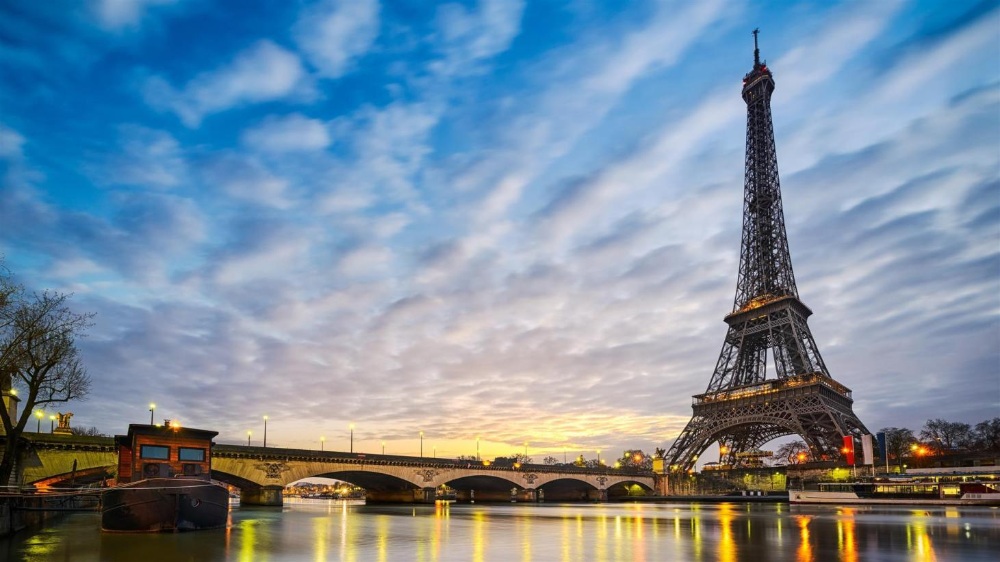
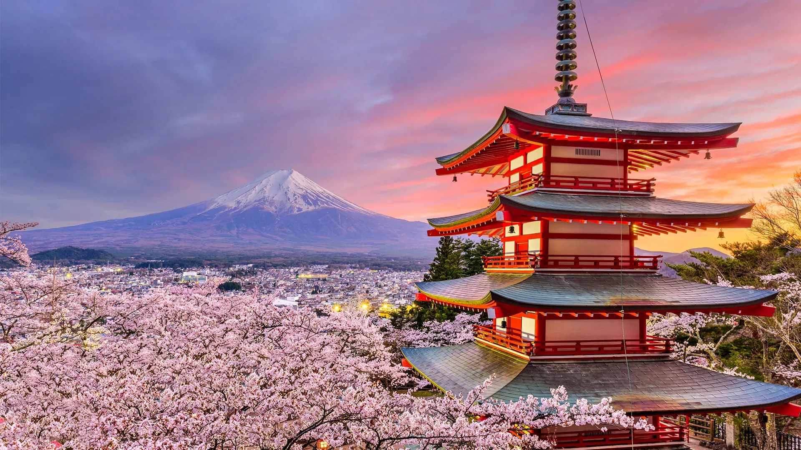
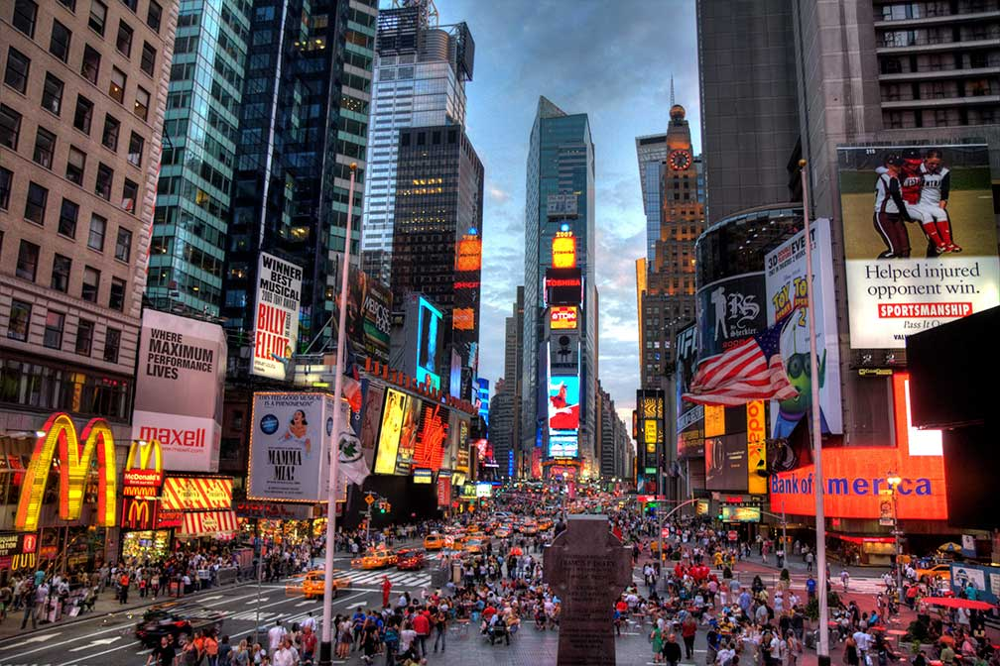

Best Destinations for Travel in World
Sure, here are some introductions to popular travel destinations around the world:
- Paris, France: Known as the "City of Love," Paris is famous for its romantic ambiance, stunning architecture, and world-renowned cuisine. Visitors can explore iconic landmarks like the Eiffel Tower, the Louvre Museum, and Notre Dame Cathedral, stroll through charming neighbourhoods like Montmartre and the Marais, and indulge in delicious French pastries, wine, and cheese. Paris is the capital city of France, located in the northern part of the country. It is one of the most populous cities in Europe, with a population of over 2 million people, and it is known for its rich history, architecture, fashion, art, and cuisine. Some of the most famous landmarks in Paris include the Eiffel Tower, the Louvre Museum, Notre-Dame Cathedral, the Champs-Élysées avenue, and the Arc de Triomphe. Paris is also known for its many beautiful parks and gardens, including the Luxembourg Gardens and the Tuileries Gardens. Paris is a global centre for art and culture, with many museums and galleries showcasing some of the world's most famous art collections, including works by Picasso, Monet, and Van Gogh. The city is also famous for its fashion industry, with numerous high-end fashion houses and boutiques located in the city's fashionable neighbourhoods. Paris is also home to many world-renowned universities, including the Sorbonne and Sciences Po, making it a hub for academic research and innovation. Finally, Paris is known for its excellent cuisine, including traditional French dishes such as escargots, coq au vin, and bouillabaisse, as well as delicious pastries such as croissants and macaroons. 
- Bali, Indonesia: Bali is a tropical paradise known for its pristine beaches, lush jungles, and rich cultural heritage. Visitors can relax on sandy beaches, surf world-class waves, trek through rice terraces, and discover ancient temples and traditional villages. Bali is an Indonesian island located in the westernmost end of the Lesser Sunda Islands, lying between Java to the west and Lombok to the east. It is known for its beautiful beaches, rich culture, and unique Hindu traditions. Bali has a population of over 4 million people and is the largest tourist destination in Indonesia, with millions of visitors every year. The island is famous for its beautiful landscapes, including its beaches, lush forests, and picturesque rice paddies. The island also has a rich cultural heritage, which is evident in its traditional dances, temples, and religious ceremonies. Some of the most popular tourist destinations in Bali include Ubud, Kuta, Seminyak, and Nusa Dua. Visitors can also enjoy outdoor activities such as surfing, scuba diving, and hiking, as well as sample delicious local cuisine, which features a mix of Indonesian, Chinese, and Indian influences
- Tokyo, Japan: Tokyo is a vibrant and modern city that offers a unique blend of old and new. Visitors can explore futuristic neighbourhoods like Shinjuku and Shibuya, immerse themselves in Japanese culture and tradition, and indulge in delicious Japanese cuisine, from sushi and ramen to wagyu beef and sake. Tokyo is the capital city of Japan and one of the largest cities in the world. Located on the eastern coast of the island of Honshu, Tokyo is the economic, political, and cultural center of Japan. The city has a population of over 13 million people and is known for its modern technology, bustling streets, and traditional culture. Tokyo is home to many famous landmarks, including the Tokyo Tower, the Imperial Palace, and the Meiji Shrine. The city is also famous for its food, including sushi, ramen, and tempura. Additionally, Tokyo is known for its shopping, entertainment, and nightlife, with popular districts such as Shinjuku, Shibuya, and Roppongi. Tokyo hosted the 2020 Summer Olympics, which were postponed to 2021 due to the COVID-19 pandemic. The city is served by two major airports, Narita International Airport and Haneda Airport, and has an extensive public transportation system, including the world-famous Tokyo subway system. 
- York City, USA: Known as the "City That Never Sleeps," New York City is a bustling metropolis that offers endless opportunities for exploration and adventure. Visitors can take in the iconic skyline, explore world-class museums and galleries, shop in trendy neighbourhoods like SoHo and Williamsburg, and indulge in diverse cuisine from around the world. New York City is the largest city in the United States, located in the state of New York. It is known as the "City That Never Sleeps" and is famous for its iconic landmarks such as the Statue of Liberty, Empire State Building, Times Square, Central Park, and the Brooklyn Bridge. It is a global hub for finance, fashion, art, and entertainment, attracting millions of visitors each year. New York City is also home to some of the world's most prestigious universities, museums, and cultural institutions. With a population of over 8 million people, it is one of the most diverse and cosmopolitan cities in the world, with residents from all over the globe. 
- Sydney, Australia: Sydney is a vibrant coastal city known for its stunning beaches, iconic landmarks, and laid-back lifestyle. Visitors can soak up the sun on Bondi Beach, take in the Opera House and Harbour Bridge, explore trendy neighbourhoods like Surry Hills and Paddington, and discover the city's rich cultural heritage. Sydney is the capital city of the state of New South Wales in Australia and is located on the east coast of the country. It is known for its beautiful harbour, iconic landmarks such as the Sydney Opera House and Harbour Bridge, and its vibrant multicultural community. Sydney is also home to many world-renowned beaches, including Bondi Beach and Manly Beach, and has a thriving arts and cultural scene, with many museums, galleries, and performance venues. It is the largest and most populous city in Australia, with a population of over 5 million people. Sydney is also a major economic hub and is home to many businesses, both large and small, across a wide range of industries.

_2019-06-21.jpg)